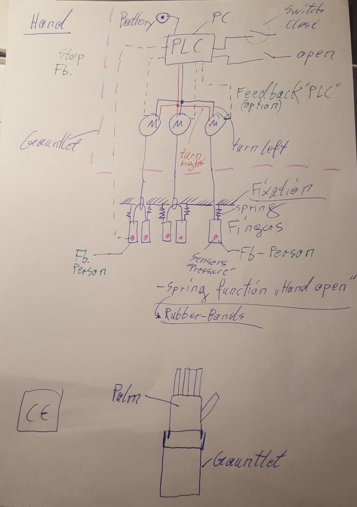

During this course, we were asked to develop an idea for assisting people with necessities. After thinking about different projects, we realized that we would focus on people with a missing forearm, since we believe that even though they adapt to the routine very efficiently, an extra help could be useful. Even if the field of affordable prosthetics is growing, the one of myoelectric prosthetics is still stuck, with our project, we aimed to prove that an affordable myoelectric prosthetic is feasible. Since the loss of a limb can happen at every age and once a prototype exists is relatively easy to adapt it to different sizes, the target audience of our project varies from infants to elders.
In order to develop the prototype, we used several techniques during the course. First, we did 3D-modelling, then we printed the models in the 3D-printing machines, afterwards we had to start doing the programming of the sensors and motors using Arduino, and finally, we did the different circuitry and soldering that was needed. If we had had a specific patient, we should have implemented scanning and 3D-sculpting.
The results were not satisfactory since currently the prototype is not functional. First problems appeared when designing, since we hadn’t developed enough skills for making a human-like prosthetic; problems with the 3D-printing also appeared since small but important details were lost and additionally, the reading of the muscle signals was never precise enough for making the prosthetic work in a real patient.
DEVELOP OF THE IDEA
It should be pointed out the help of Lars Thalmann, since his advices were essential to be able to start doing the project. He was the one who directed us in the steps of the project.

The goal was that once the sensor analyzes the muscle contract, the servomotors would be activated in such a way that they would rotate 180° tensioning the wires and making the hand close. Once the muscle would be relaxed, the opposite would happen, the servomotors would turn in the other direction and the hand should open.